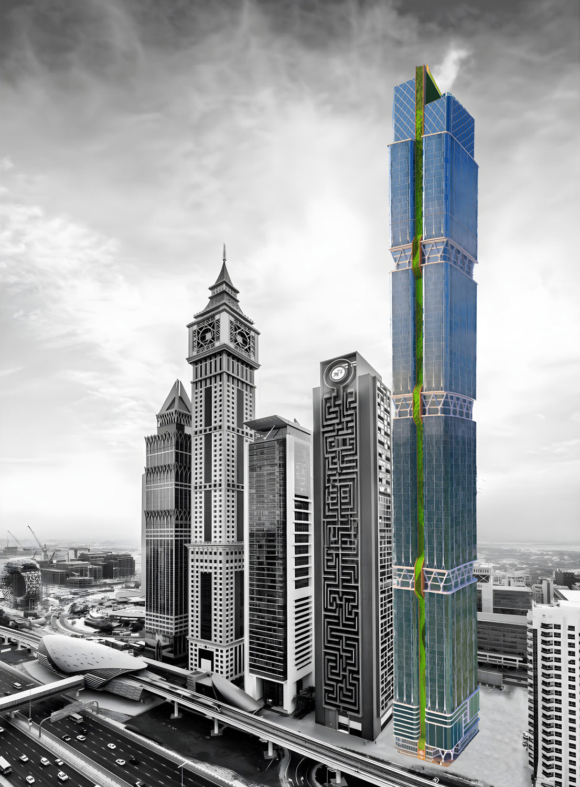
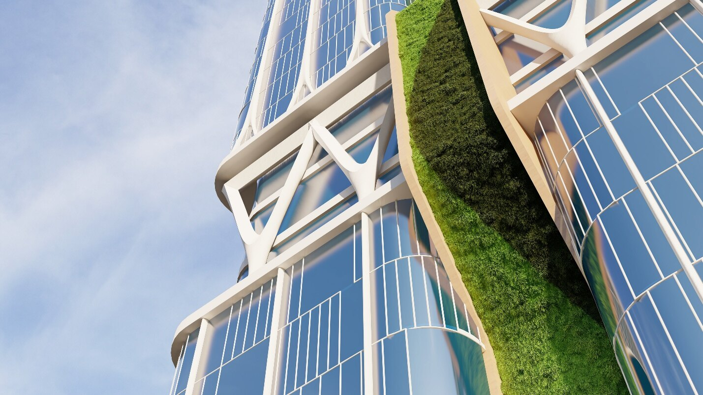
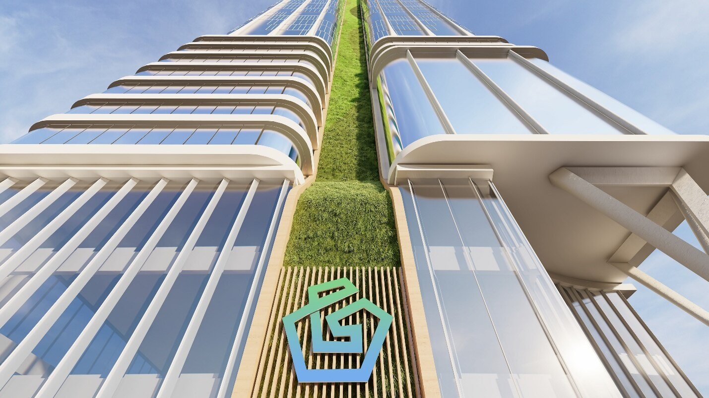
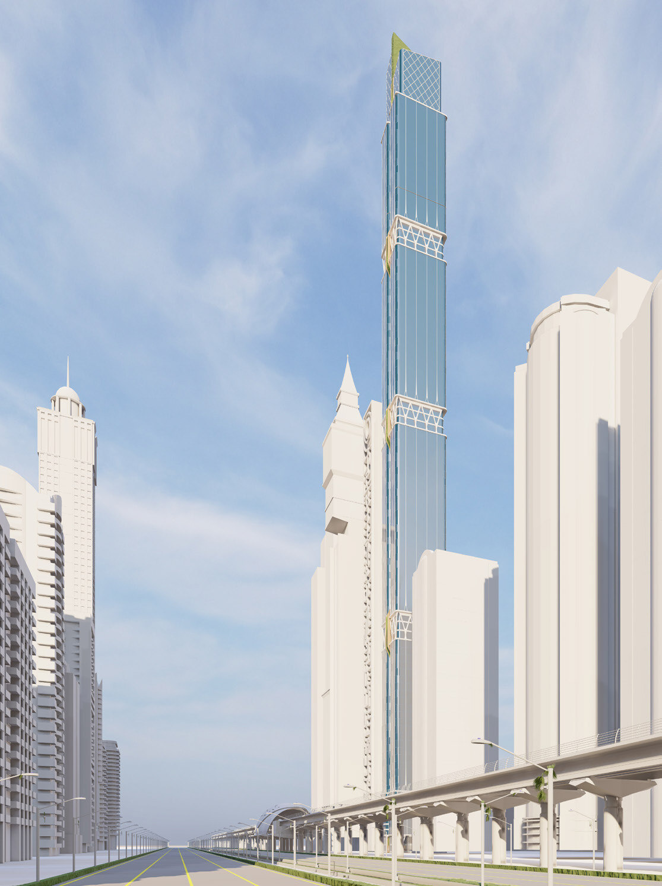
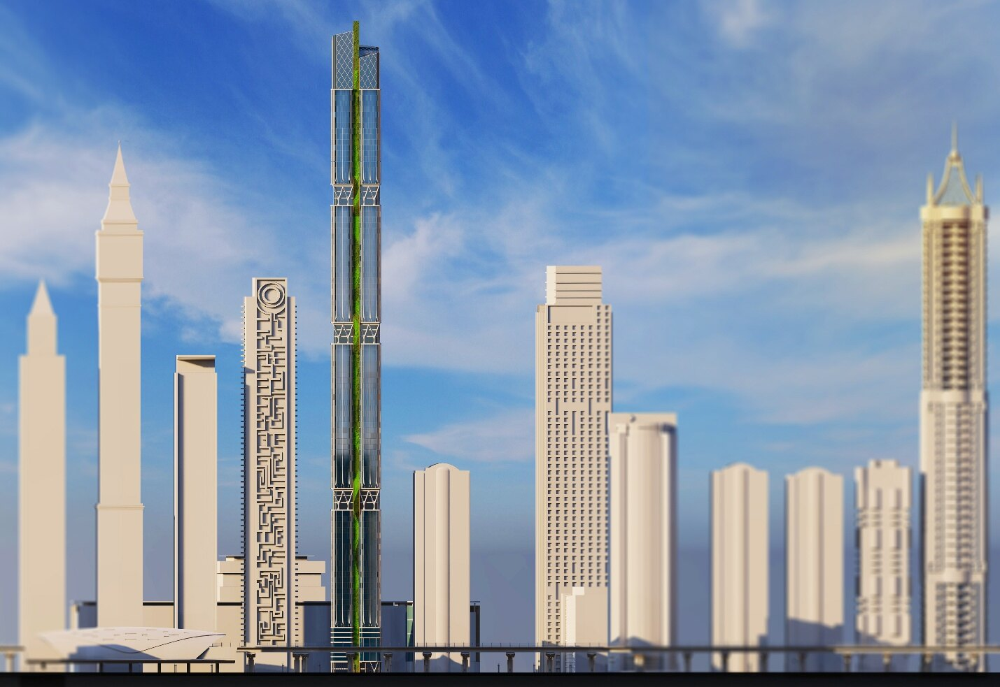

/ ADEC — ARCHITECTURE
G-Rise: Green Living
An ADEC residential proposal for Dubai — green high-rise living, where the towers step back into cascading planted terraces and vertical greenery, folding gardens into every level of the building.

/ OVERVIEW
A tower that carries the garden upward.
G-Rise sets out to make green living the organising idea of a high-rise, not a decorative afterthought. Its residential volumes step and set back as they climb, and each setback becomes a planted terrace — so greenery threads through the whole section of the building rather than sitting only at ground level.
The cascading planting shades the facades, softens the tower’s profile against the Dubai skyline, and gives residents outdoor garden rooms at height. Read together, the terraces turn the building into a vertical landscape.
These are the ADEC proposal boards and renders. Replace this text with the project’s brief, sustainability targets and credits when available.



